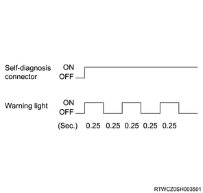
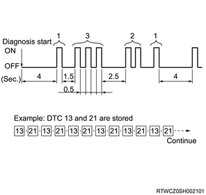
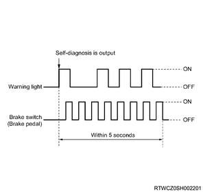

Description of diagnosis
The ABS, EBD, TCS, and ESC failure symptoms are divided into symptoms that can be detected with DTCs along with lighting of the ABS warning light, the brake system warning light, and the ESC warning light, and symptoms that the driver can detect as vehicle problems.
Continue the diagnosis in accordance with the inspection of the ABS control system.
Verify that the operation of the warning light is proper and observe the DTC information with a scan tool.
Note
About self-diagnosis
The EHCU has a self-diagnosing function, which performs the check operations when the system is started, to determine whether there are any system malfunctions and which areas are defective. If a malfunction is detected, it illuminates the ABS warning light, the brake system warning light, and the ESC warning light to inform the driver of the malfunction, and records a DTC.
Caution
Reading blinking DTCs
The vehicle must be stopped. Vehicle speed of 3 km/h (2 mph) or lower.
The flash code is displayed with blinking of the ABS warning light when the pin No. 12 and pin No. 4 or pin No. 5 of the DLC are short-circuited and then the ignition switch is turned ON.
Note

Note

Method for clearing DTC
Use the following method to clear the DTCs without using a scan tool.
Short-circuit the pin No. 12 and pin No. 4 or pin No. 5 of the DLC and then turn the ignition switch ON. Turn the brake switch ON/OFF at least 8 times within 5 seconds after the ABS warning light starts blinking.
